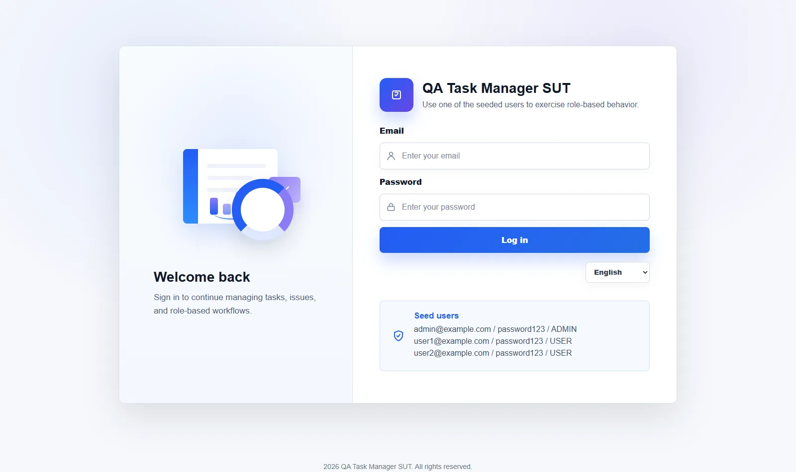
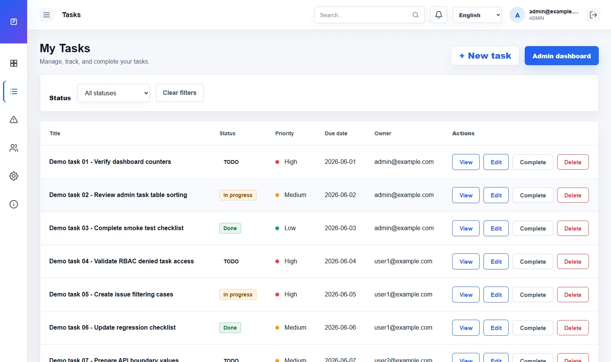
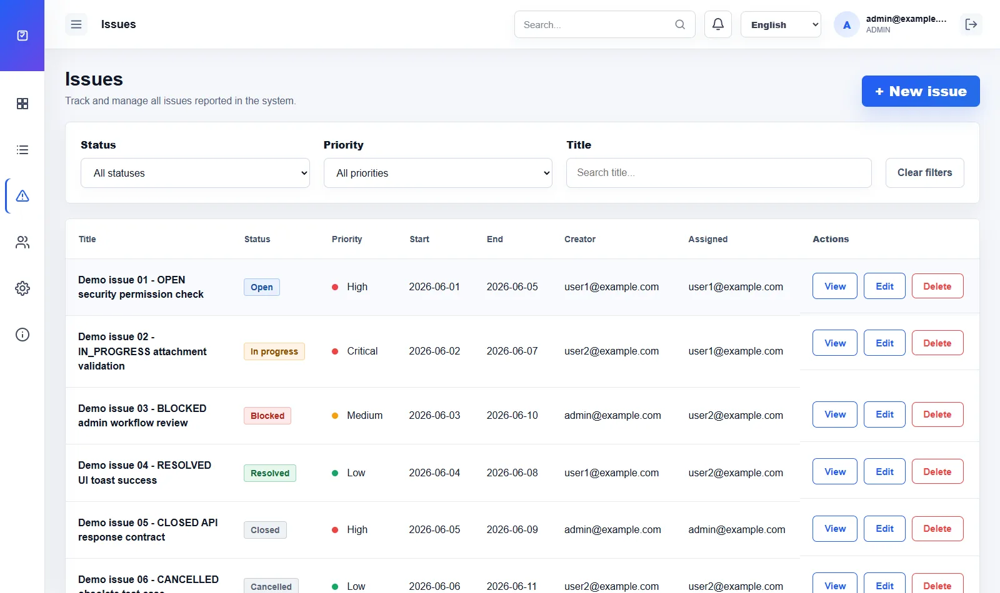

Manual Test Design
Structured scenarios for core user workflows.
A practical QA project built around a task management system used as a System Under Test to demonstrate manual testing, API validation, automation, defect reporting, evidence, traceability, and CI regression.
Structured scenarios for core user workflows.
Backend validation using API checks and SQL.
Role-based access control and permissions.
Bug reporting with clear steps and evidence.
Screenshots, logs, and artifacts for traceability.
Stable flows prepared for repeated execution.
Automated regression strategy for pipeline checks.
Linking requirements, tests, defects, and evidence.
Real application screens from the current SUT. API evidence, defect reports, and test execution reports will be added when those QA phases start.

Authentication entry point used to exercise role-based behavior.
Main SUT overview with workload, task status, issue status, and summary panels.

Task listing used for status, priority, ownership, filtering, and action checks.

Issue list used to validate tracking, filters, status transitions, and ownership.
| Area | What is tested |
|---|---|
| Authentication | Login, invalid credentials, user access, and session behavior. |
| Tasks | Create, edit, complete, delete, validation, and task ownership. |
| Issues | Creation, labels, assignments, comments, and status transitions. |
| RBAC | Admin vs regular user permissions and access to protected resources. |
| Attachments | Valid files, unsupported files, size limits, and permissions. |
| API | Status codes, validation, data integrity, and permissions. |
| Regression | Critical user flows prepared for repeated execution. |
Explore all areas of the project in detail.
Test scenarios, execution notes, exploratory testing, and regression coverage.
Endpoint validation, status codes, negative cases, and backend checks.
UI/API automation strategy, tools, framework structure, and regression coverage.
Screenshots, logs, execution results, and supporting test artifacts.
Bug reports, reproduction steps, expected vs actual results, and severity.
Relationship between requirements, scenarios, tests, evidence, and defects.
Automated execution strategy and regression checks in the pipeline.
This project is designed to showcase a complete QA process from requirements to regression.
Back to Portfolio